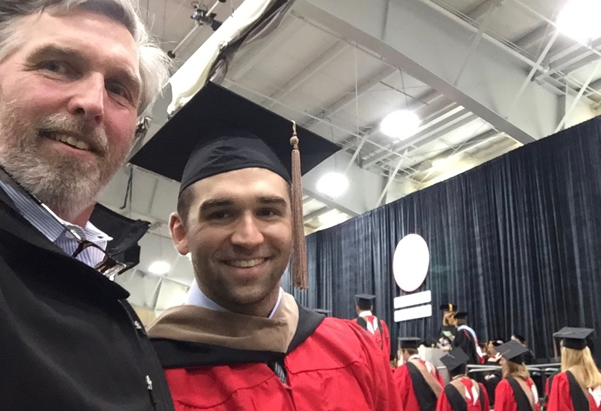
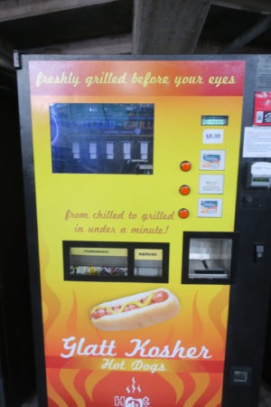

Day 1: Introduction

Here I am with my wife, Sally:
.jpg)
We live in Nashua, New Hampshire which is about 40 miles from room #102 at the Science Center. I'm 58 years old, and started taking classes at the Extension School 5 years ago. I am an accepted student at Harvard Extension School, and hope to receive an ALB degree on May 27,2021! My pursuit of a college education began in 1980, the year I graduated from Nashua High School. I majored in chemistry at Saint Anselm College, and transfered to Northeastern University after two years.
Then life, and a severe lack of money happened! I opened a small home renovation business so that I could eat, and started a family. All great things, but not completing a college degree left a void, and an itch that needed to be scratched. My business evolved over the last 35 years into an industrial equipment service operation. I mainly troubleshoot production line equipment at manurfacturing facilities around New Endland (I'm basically a "master of the obvious" as my wife would say).
This is my son, Joe:
After our son Joe's college graduation in 2015 I desided to follow the wise words found in a fortune cookie given to me by my wife. The scrap of paper inside said: "It's never too late to be the person you might have been."
This summer, I had initially planned on taking a class to fulfill a moral reasoning requirement for graduation. However!, when I came across Digital Fab in the course catalog, I quickly changed plans!!
Proposed Final Project: iPhone Controlled Hotdog Cooker
Here is a demo of the old school hotdog cooker made from two nails and an extension cord.
This is the mother of all hotdog vending machines,which is located at Fenway Park in Boston, MA.
See this machine in action in the video below!!